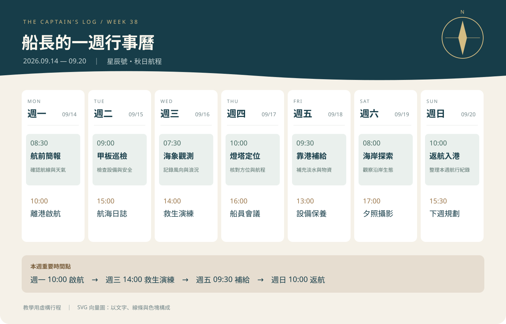

活動 06：我的網站適合哪種版型？
網頁版型佈局：探索並評估最適合自己網站內容的版型配置與視覺架構。

請點選下方按鈕選單，快速切換至各項活動內容：
包含活動 01~04 的 HTML 基礎練習（小站建立、影音媒體嵌入、學習計畫整理與報名表設計）。
進階 CSS 練習：學習如何使用 CSS 為相同的 HTML 結構套用不同的視覺風格與主題樣式。

網頁版型佈局：探索並評估最適合自己網站內容的版型配置與視覺架構。
CSS 排版元件應用：運用 Flexbox / Grid 排版工具將文字、圖片與各項元素排列整齊。
響應式網頁設計 (RWD)：運用 Media Queries 技術讓網頁能完美呈現於電腦與手機等不同螢幕尺寸。
無障礙網頁與自動化檢測：進行無障礙問題自我檢查，優化網站易用性與可存取性。